Jan 2026 –
Present
Present
IT Data Co-op
Castrol – Wakefield Canada Inc.
Support data systems and analytics work within the IT function, applying data science coursework to enterprise operations.
M.S. Information Systems, Northeastern University — Toronto
I am a Master's student in Information Systems at Northeastern University's Toronto campus, preparing to pursue doctoral research at the intersection of machine learning, responsible AI, and human-centered design.
My background spans full-stack development, government UX design, and applied data engineering — a practical grounding that lets me move across a research problem end to end, from raw data to the interface a person actually uses. I'm especially interested in where these threads converge — in assistive and accessible technology for aging and vulnerable populations, where model quality, fairness, and usability all have to hold up together.
Challenge — Ensemble machine learning models for healthcare prediction, addressing data imbalance and clinical interpretability.
Approach — XGBoost, Random Forest, and Neural Networks with SMOTE balancing and statistical validation.
Outcomes
Challenge — Ten years of open municipal crime data (39,000+ records) needed to move from raw CSV to a live, explorable analytics layer usable by non-technical stakeholders.
My role — Led data modeling and SQL analysis on a 3-person team: designed the MySQL schema, wrote 15 analytical queries spanning temporal, geographic, attribute, and multi-dimensional analysis, and architected 6 pre-aggregated views plus a master table optimized for the BI layer. Teammates handled cloud infrastructure/ETL and the QuickSight dashboard build.
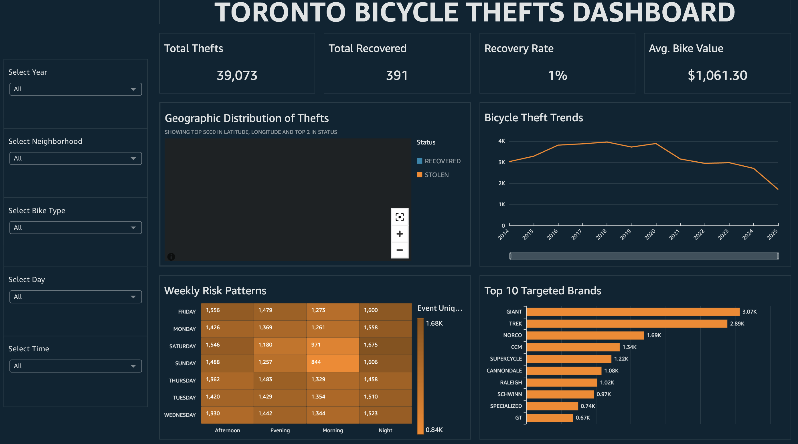
Outcomes
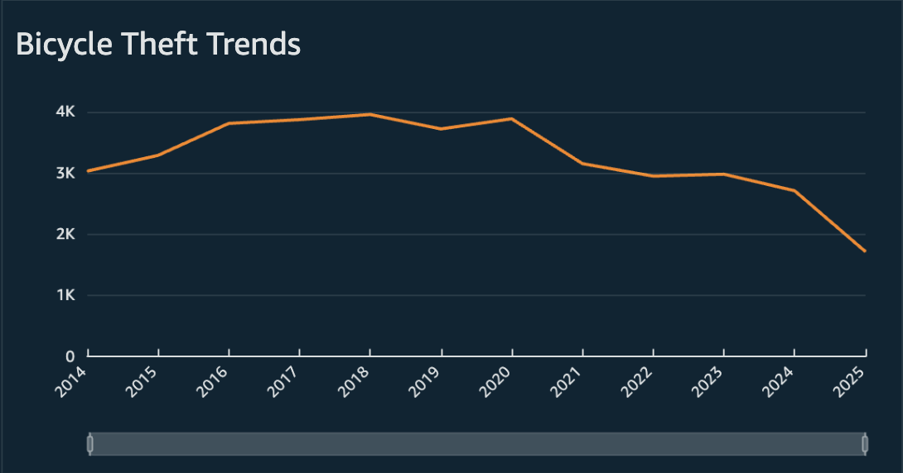
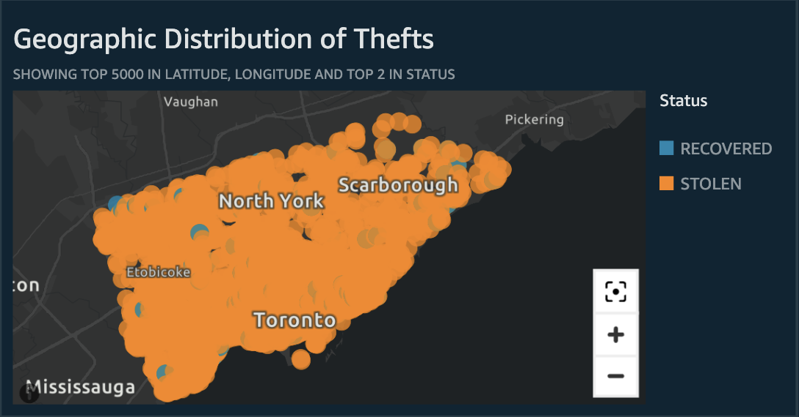
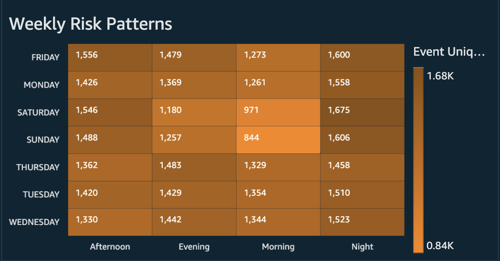
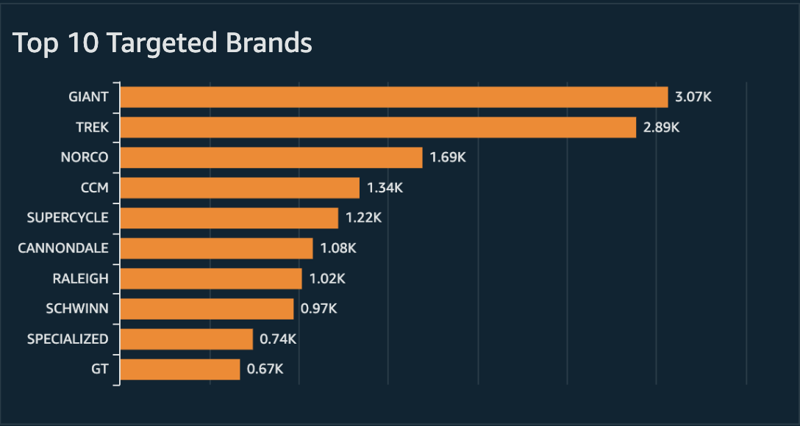
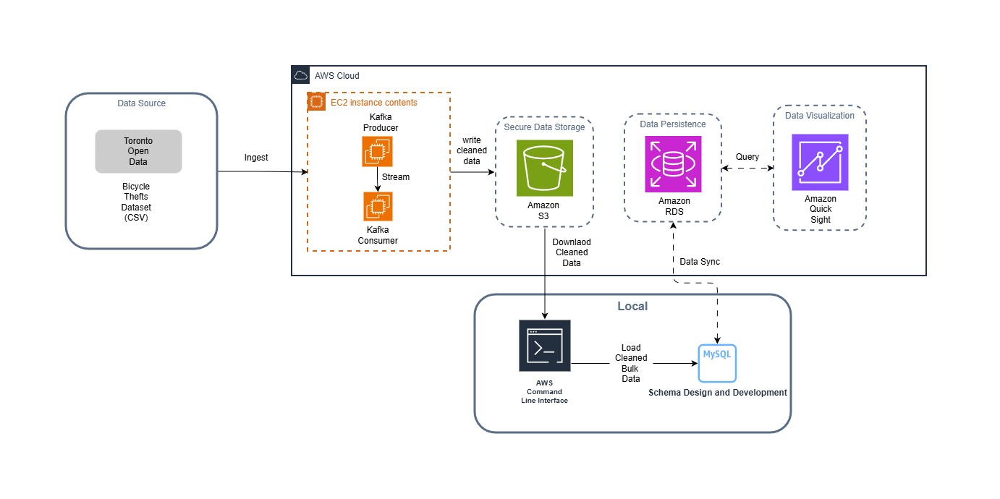
Challenge — Airport operations with fragmented systems causing inefficiencies in baggage handling and catering services.
Approach — Integrated relational database with 15+ entities, real-time tracking, and user-centered design for diverse stakeholders.
Outcomes
Challenge — Designing mobile interfaces for elderly care that address complex caregiver workflows in skilled nursing facilities while prioritizing accessibility.
Approach — Flutter-based application built with empathy mapping, persona development, and iterative usability testing for caregiver task management.
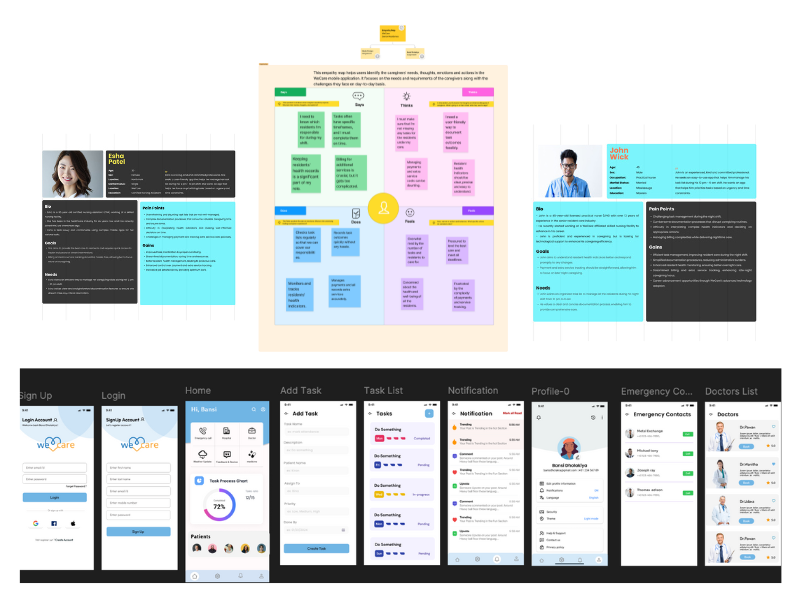
Outcomes
Challenge — Government system accessibility for elderly users navigating complex pension regulations.
Approach — Comprehensive user manuals and accessible interface design for senior citizens.
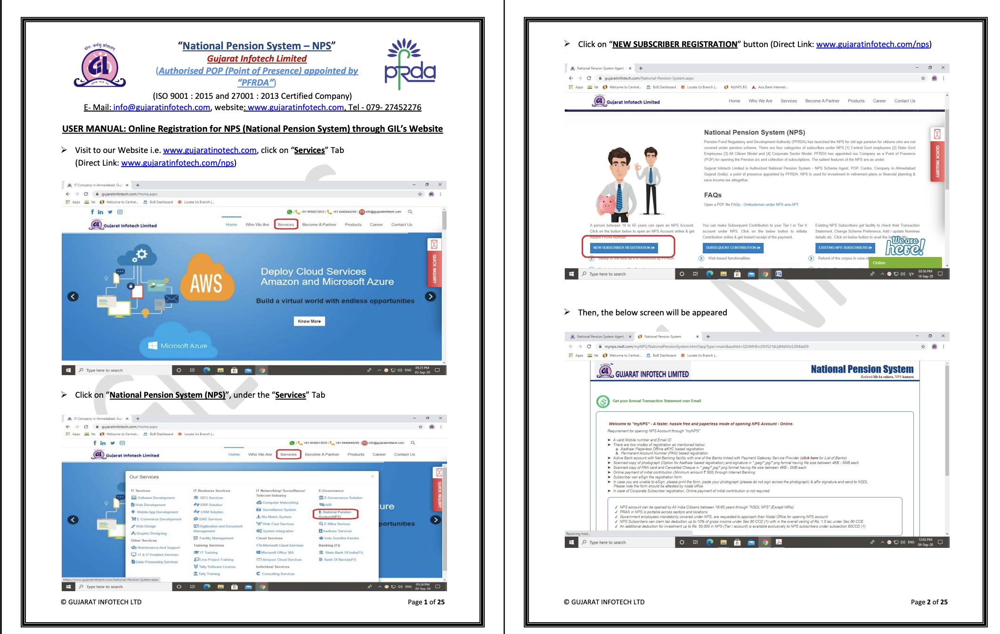
Outcomes
Challenge — Delivery platform for female-driven small businesses addressing operational challenges.
Approach — JavaFX and MySQL with role-based interfaces and real-time tracking.
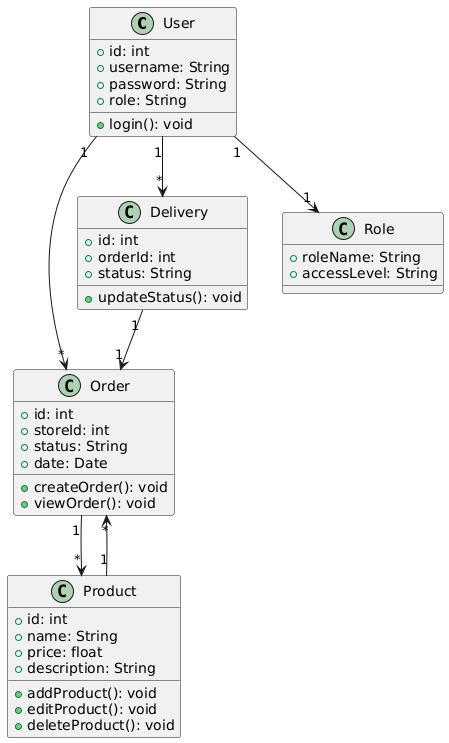
When not engaged in research or coursework, I enjoy trekking through mountains and creating string art, resin pieces, and traditional painting — experiences that inform my perspective on human-centered design.
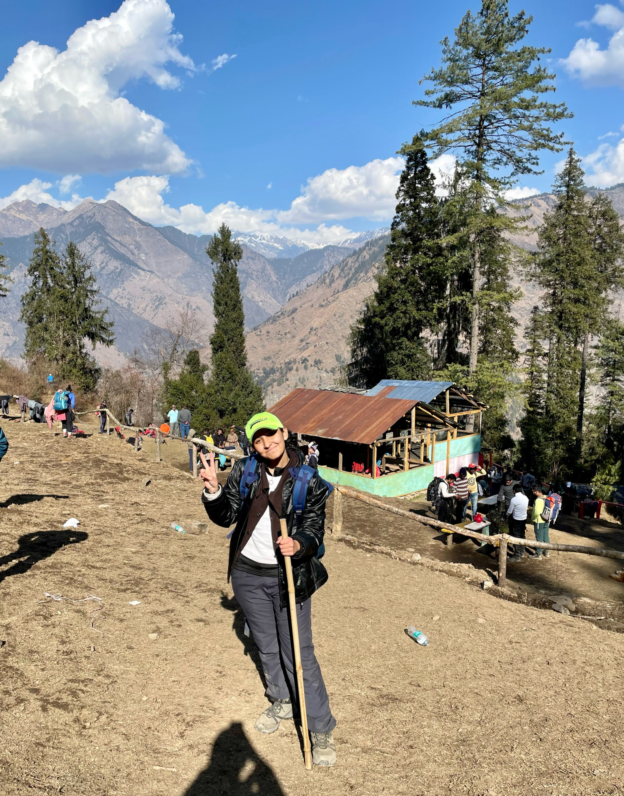
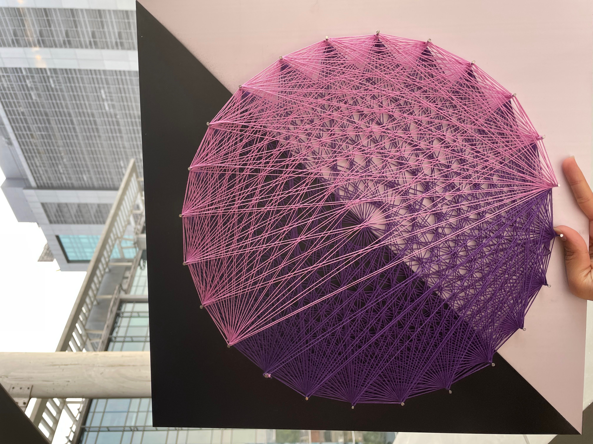
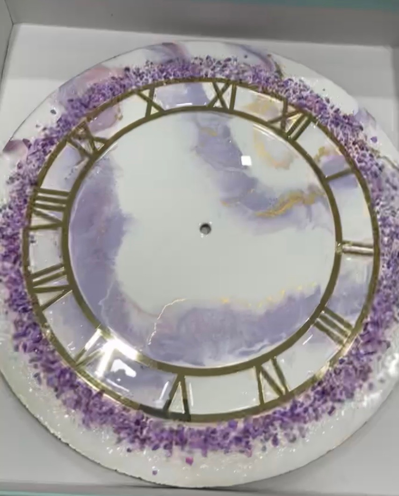